Route mit ausgeschaltetem Bildschirm aufzeichnen
Starte eine sichtbare Aufnahme, sperre dein Handy und behalte einen sauberen Track für Spaziergänge, Wanderungen, Fahrten und Läufe.
Privater GPS Logger · Google-Timeline-Alternative
Zeichne Spaziergänge, Wanderungen, Radtouren und Autofahrten mit ausgeschaltetem Bildschirm auf. Tippe auf einen getrackten Tag, um Stopps, Bewegungen und Momente in einer privaten Timeline zu erleben, und exportiere GPX/KML, wenn du deine Dateien brauchst.
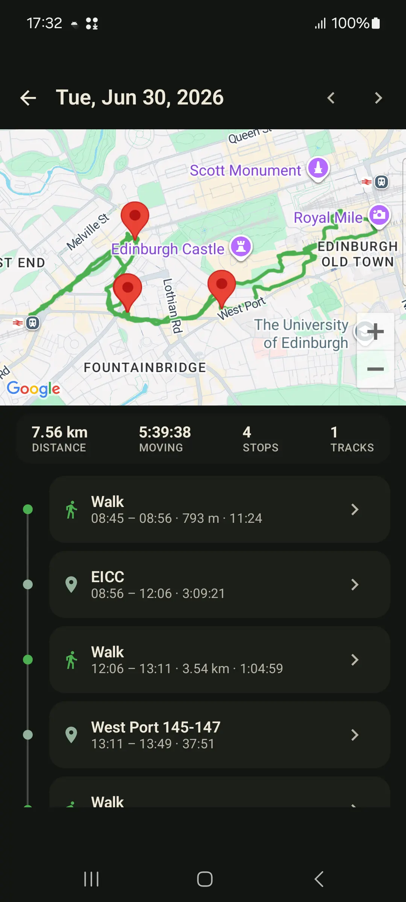
Tagesverlauf
Tippe vor einem Spaziergang, einer Wanderung, Fahrt, einem Lauf oder Außentermin auf Aufnahme.
Tippe auf einen getrackten Tag für eine Timeline mit Stopps, Bewegungen und Momenten.
GPX & KML pro Track plus ein ZIP-Backup des gesamten Verlaufs. Immer portabel.
Optionales Live-Sharing überträgt deine aktuelle Position, nicht einen Cloud-Verlauf deiner Routen.
Warum Menschen GPS Logger nutzen
Nutze GPS Logger, wenn Google Timeline nicht mehr reicht, wenn eine andere App GPX hinter einer Wand versteckt oder wenn du Bildschirm-aus-Aufzeichnung für Wanderung, Pendelweg, Roadtrip oder Außentermin brauchst, ohne ein soziales Fitnessprofil aufzubauen.
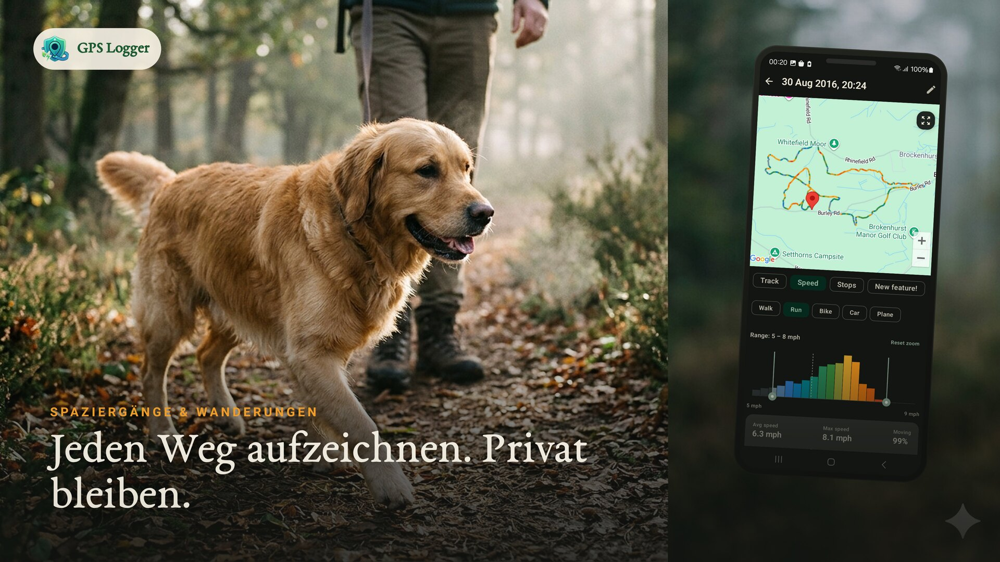
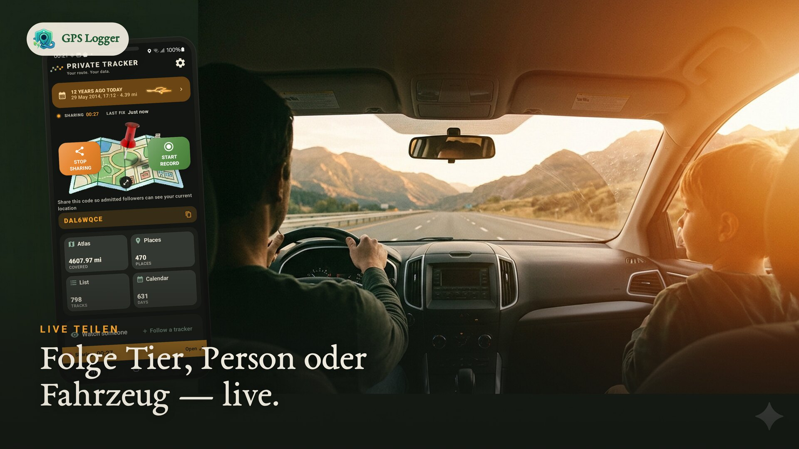
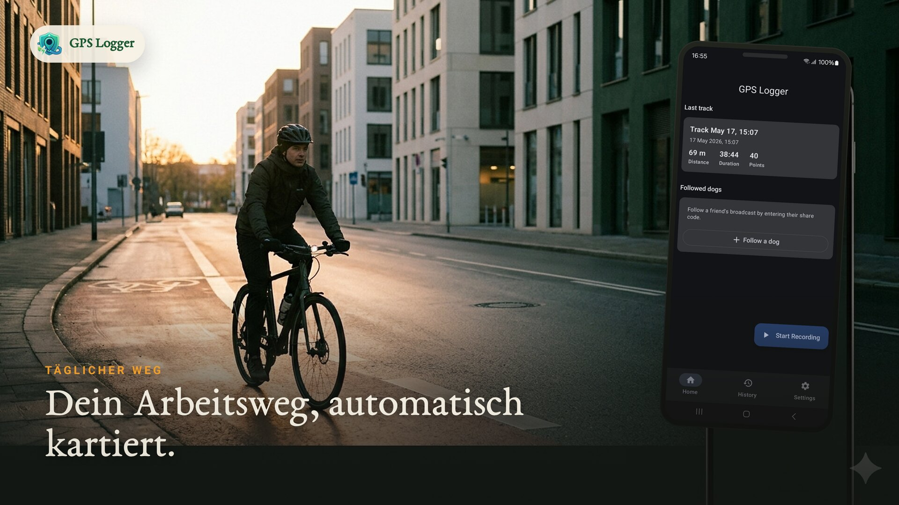
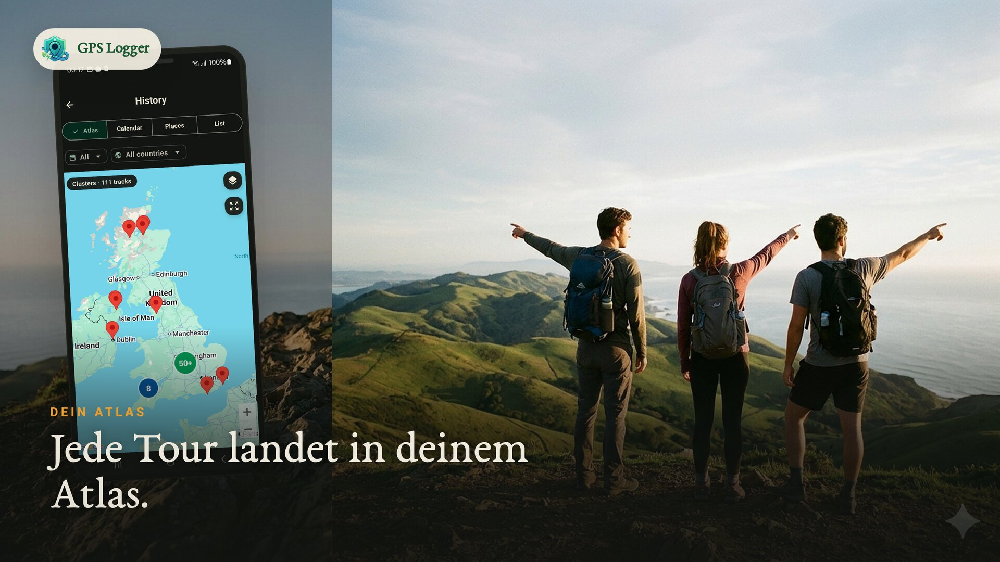
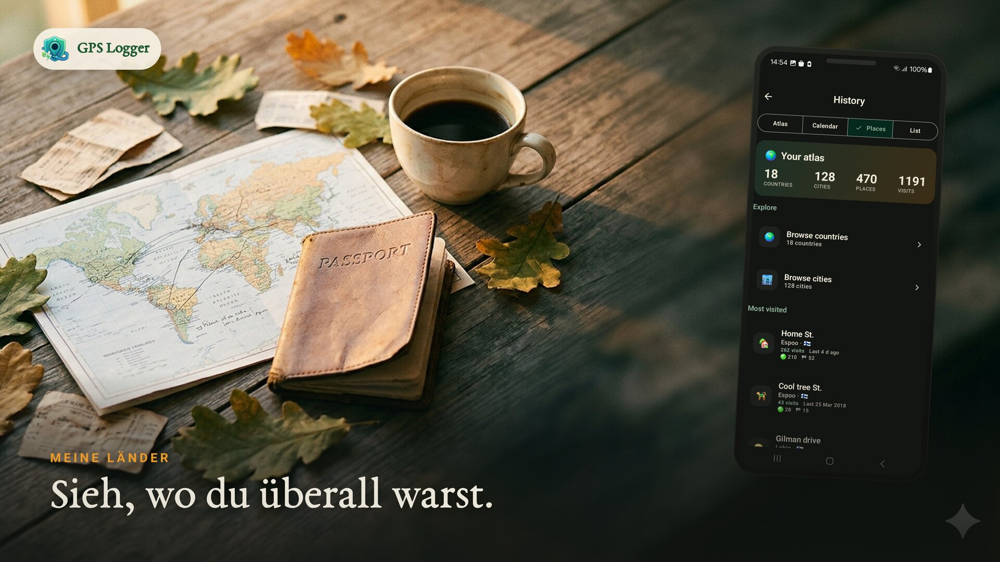
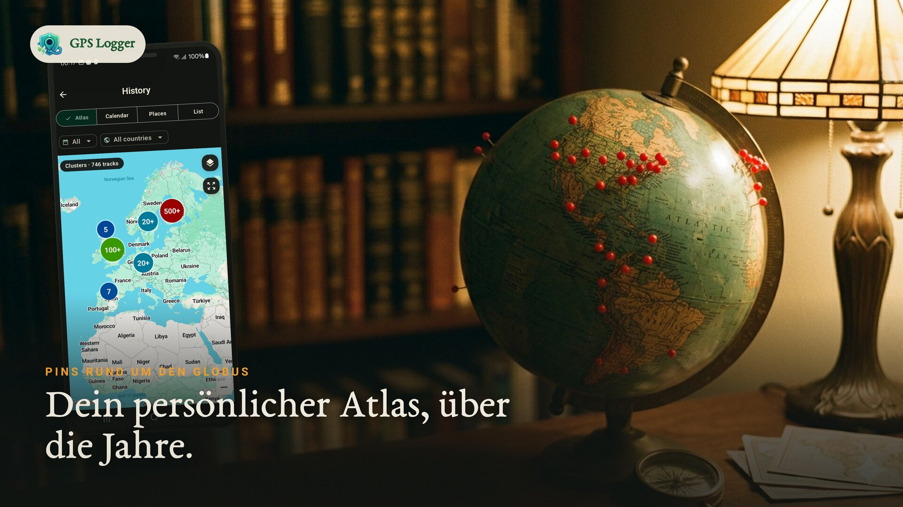
Wofür Menschen die App installieren
Starte eine sichtbare Aufnahme, sperre dein Handy und behalte einen sauberen Track für Spaziergänge, Wanderungen, Fahrten und Läufe.
Aus gespeicherten Tracks entsteht ein persönlicher Atlas: Karte, getrackte Tage, wiederkehrende Orte, Länder und Statistiken.
Importiere alte GPX-Tracks, exportiere GPX/KML bei Bedarf und sichere den ganzen Verlauf als ZIP außerhalb der App.
Sende einen zurücksetzbaren Code, wenn jemand deine aktuelle Position sehen soll. Stoppe das Teilen, und die Live-Sitzung wird entfernt.
Nutze Routenlogs für Roadtrips, Außentermine, Kartenprüfungen, Outdoor-Notizen oder einfach als Erinnerung an Orte.
Offene Dateien und lokale Speicherung halten deinen Verlauf auch dann nützlich, wenn du später andere Tools nutzt.
In Bewegung sehen
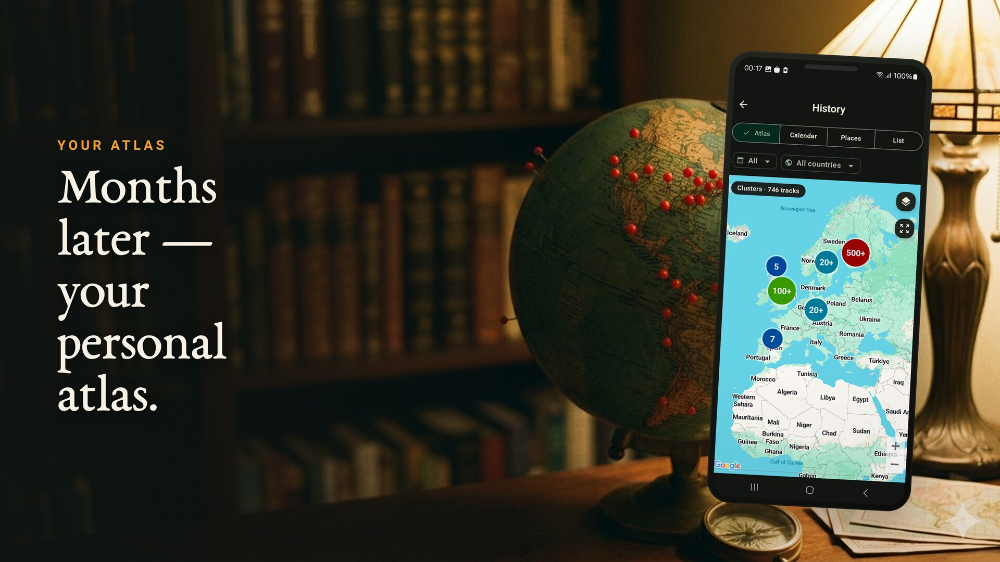
So funktioniert's
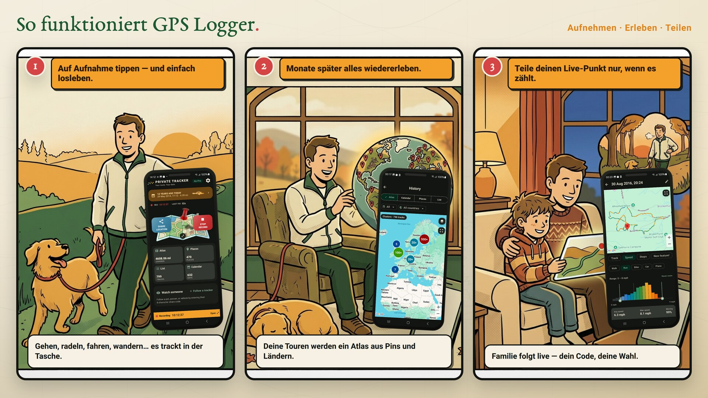
Einmal tippen und los. Es trackt in deiner Tasche, während du deinen Tag genießt.
Tippe auf einen Tag und sieh Route, Stopps, Bewegungen und Notizen, aus denen er bestand.
Sende einen Live-Punkt mit einem zurücksetzbaren Code und einem Follower-Limit.
Funktionen
Starte eine Aufzeichnung für Spaziergänge, Wanderungen, Rad- oder Autofahrten. Es trackt im Hintergrund und speichert Route, Distanz, Dauer und Geschwindigkeit.
Tippe auf einen Kalendertag, um Karte plus chronologische Geschichte von Wegen, Fahrten, Stopps und Momenten zu sehen. Sie wird live aus gespeicherten Tracks gebaut; deine Dateien werden nicht verändert.
Eine lebenslange Karte deiner Wege, ein Kalender der getrackten Tage, die Orte, zu denen du immer wiederkehrst, und die Länder, die du bereist hast.
Teile deine aktuelle Position mit einem zurücksetzbaren Code und einem Limit (1–20 Follower). Nur die aktuelle Position wird gespeichert und nach dem Stopp gelöscht.
Exportiere einzelne Tracks als GPX oder KML oder sichere deinen gesamten Verlauf als GPX-ZIP. Offene Formate, deine Daten, jederzeit.
Bewegungsadaptives Tracking reduziert die GPS-Frequenz im Stillstand. Eine Benachrichtigung zeigt die aktive Aufnahme, optionaler Autostart nach Reboot.
Kein Account nötig. Routen leben auf deinem Handy, Live-Sharing ist optional und du kannst deinen Code zurücksetzen oder Tracks jederzeit löschen.
Echte App-Screens
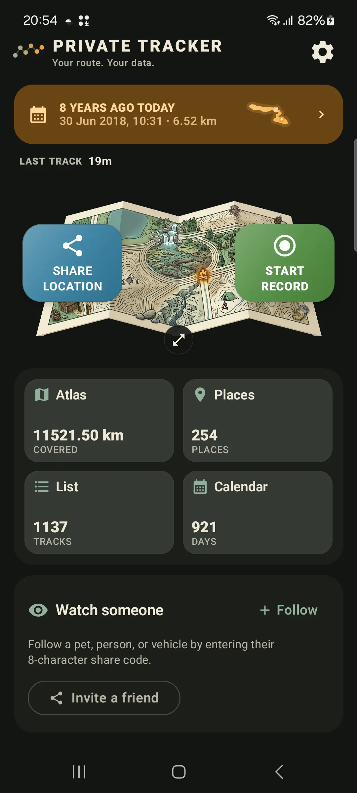

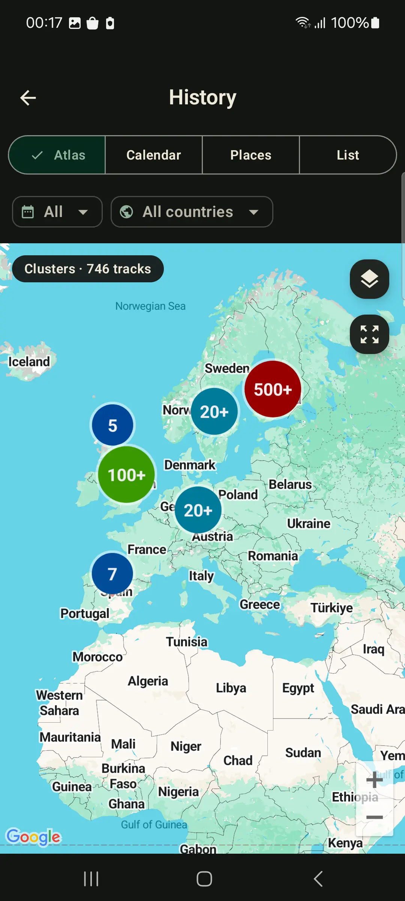
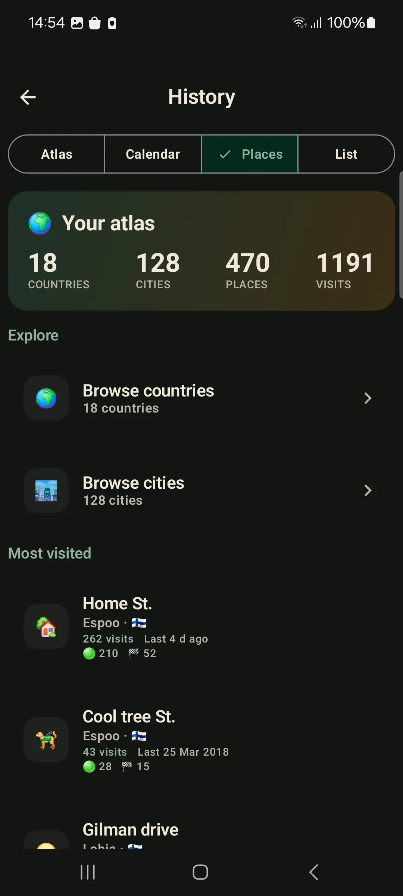
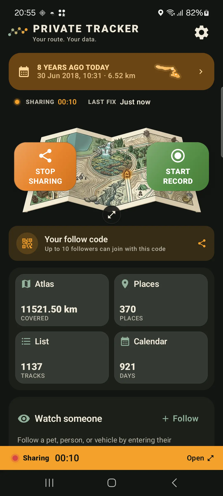
GPS-Logging-Anleitungen
Timeline
Baue eine Tages-Timeline deiner Routen auf, die du startest, stoppst, exportierst und auf deinem Handy behältst.
Tutorial
Schritt-für-Schritt Routenaufzeichnung, Hintergrund-Tracking, GPX-Export und Backup.
Bildschirm aus
Hintergrundstandort, Vordergrund-Benachrichtigung, Akku-Einstellungen und realistische Erwartungen.
Datenschutz
Was auf deinem Handy bleibt, wann Live-Sharing Daten sendet und wie du deinen Atlas privat hältst.
Höhe
Rauschende Höhen, unmögliche Spitzen und falsche Höhenmeter mit Geländedaten bereinigen.
Vergleich
Wähle zwischen einem privaten Routen-Tagebuch, einem Trainings-Netzwerk oder beidem.
Import & Migration
Bringe alte Routen aus losen GPX-Dateien oder ZIP-Backups in einen gemeinsamen Atlas.
Workflow
Exportiere portable Tracks für Mapping, GIS, Reisearchive und Routenanalyse.
GPS Logger läuft als Vordergrunddienst, damit die Aufnahme weitergeht, wenn der Bildschirm aus ist oder du Apps wechselst. Bewegungsadaptives Sampling schont den Akku und der optionale Autostart setzt die Aufnahme nach einem Reboot fort.
Routen bleiben auf deinem Handy, außer du entscheidest dich für Live-Sharing oder Export. Live-Sharing speichert nur die aktuelle Position und löscht sie nach dem Stopp. Kartendarstellung und Diagnose nutzen Dienstleister, die in der Datenschutzerklärung beschrieben sind.
FAQ
Nein. Die Aufnahme startet nur, wenn du sie aktiv startest, und endet beim Stoppen. Einzige Ausnahme ist der optionale Autostart nach Reboot, den du selbst aktivieren musst.
Auf deinem Gerät. Nichts wird hochgeladen, außer du teilst deinen Standort live oder exportierst eine Datei.
Du teilst einen Code und wählst ein Limit (1–20 Follower). Jeder mit dem Code sieht nur deine aktuelle Position auf einer Karte. Diese wird beim Stoppen gelöscht.
Ja. Exportiere jeden Track als GPX oder KML oder sichere den gesamten Verlauf als GPX-ZIP. Kein Lock-in.
Ja. Du kannst ausgewählte GPX-Dateien importieren, auch ZIP-Backups. Die App zeigt dir aktuelle Importgrenzen, bevor du startest.
Ja. Installiere die App und zeichne zuerst echte Routen auf. Wenn du später mehr Kapazität brauchst, erklärt die App die verfügbaren Optionen direkt im passenden Kontext.
Ja. Ein Vordergrunddienst ermöglicht die Hintergrundaufnahme. Beachte für sehr lange Sessions die Akku-Hinweise in der App.
Beginne mit einem Spaziergang, einer Fahrt oder einer Tour. Exportiere sie als GPX, behalte sie in deinem Atlas oder lass deinen privaten Routenverlauf mit der Zeit wachsen.